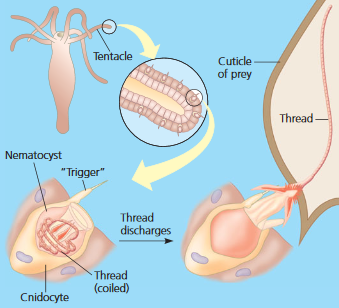
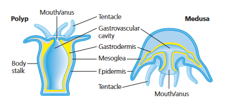

The pin you clicked on is a picture of a lace coral, located in the Indian ocean, a part of the phylum Cnidaria, the second basal taxa after Porifera.
Cnidaria's name comes from the Greek word, cnidos, which means "nettle", a kind of stinging plant. In fact, Cnidaria is characterized by their stinging tentacles, with various important organelles that help them capture prey, called nematocysts. Examples of organisms in this phylum are corals and jellyfish.

Other than that, Cnidaria is also characterized for its radially similar bodies, categorized into two distinct shapes called medusa and polyp. In both, a tentacle-ringed mouth serves as the facilitator for digestion and gas exchange.

In conception, they only form two germ layers, the ectoderm and the mesoderm, which give rise to the epidermis and the gastrodermis. In the epidermis, there are structures called rhopalia that can generate signals in response to stimuli. In order to connect those sensory stimuli, a simple nervous system or nerve net is in place, though this can be used to move contractile cells. Such contractions redistribute the phylum's water-filled insides and create a hydrostatic skeleton, their own support system.